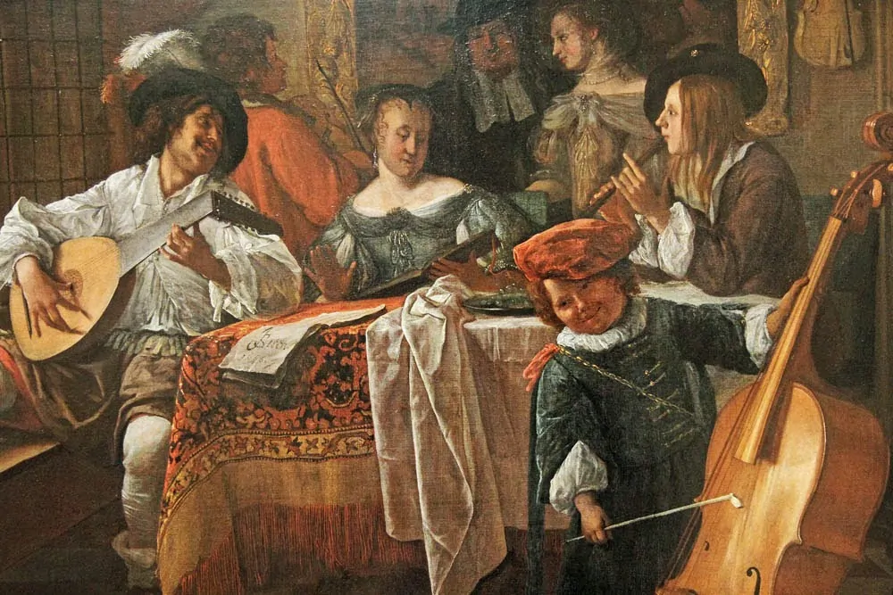

ยุคคลาสสิก

คำอธิบาย:ยุคนี้จะแยกดนตรีทางศาสนาและดนตรีเพื่อความสุนทรีย์ออกจากกัน จังผหวะและเสียงดนตรีในเพลงมีการเปลี่ยนแปลงอย่างเห็นได้ชัด ทำนองเพลงมีความเร็วและช้าสลับกันไม่นิยมสอดประสานทำนองแบบลีลาประสานทำนอง แต่หันมาเน้นทำนองหลักทำนองเดียวและใส่แนวเสียงประสานเพื่อเน้นให้ทำนองหลักมีความไพเราะยิ่งขึ้น นอกจากนี้ ยังได้มีการกำหนดรูปแบบของเพลงที่เป็นแบบแผน ได้แก่ เพลงซิมโฟนีและเพลงคอนแชร์โต มีเครื่องดนตรีที่ได้รับการพัฒนาเป็นอย่างมากโดยเฉพาะเปียโน มีการประสมวงที่แน่นอน เช่น วงเชมเบอร์ ประกอบด้วยเครื่องดนตรี 2 - 9 ชิ้น วงออร์เคสตรา ประกอบด้วยเครื่องดนตรี 4 กลุ่มใหญ่ ได้แก่ กลุ่มเครื่องสาย กลุ่มเครื่องเป่าลมไม้ กลุ่มเครื่องเป่าลมทองงเหลือง และกลุ่มเครื่องกระทบ ในยุคนี้การแสดงอุปรากร (Opera) เป็นที่นิยมอย่างมาก เพราะเป็นการแสดงที่รวมศิลปะหลายอย่างไว้ด้วยกันทั้ง ศิลปะดนตรี ศิลปะการแสดง ศิลปะการจัดฉาก ศิลปะการเขียนบท โดยสังคีตกวีที่มีชื่อเสียงในยุคนี้ ได้แก่ ฟรานซ์ โยเซฟ ไฮเดิน บิดาแห่งเพลงซิมโฟนี และ โวล์ฟกัง อะมาเดอุส โมสาร์ท บิดาแห่งเพลงสตริงคลอเต็ทผู้ประพันธ์เพลงมากกว่า 600 บทเพลงและ ลุดวิก ฟาน เบโทเฟน ที่ได้รับการยกย่องว่าเป็นสังคีตกวีผู้ยิ่งใหญ่ตลอดกาล